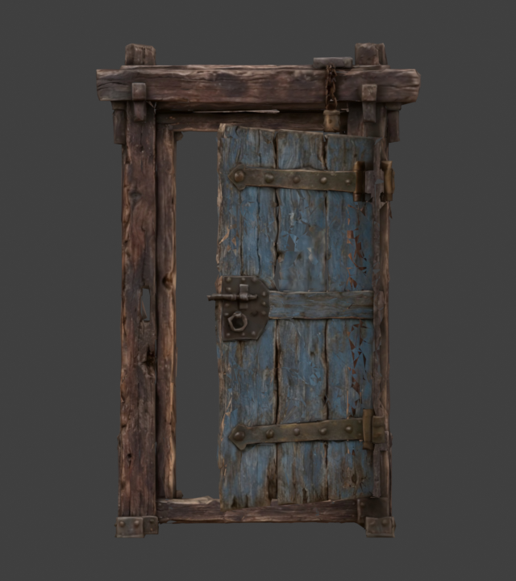
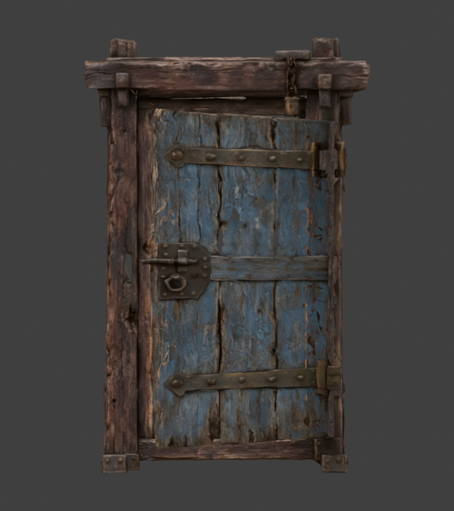

문짝과 연결 철물의 폭을 경첩 기준으로 함께 늘렸습니다. 문틀·경첩 위치와 여닫는 동작은 유지했습니다.
실제 Godot 렌더러에서 같은 17개 시점을 촬영했습니다. 재생 버튼이나 슬라이더로 전후를 함께 볼 수 있습니다.
정면과 검증 기록

수정 전 정면
수정 후 정면정면 높이 0.4–1.7m의 손잡이 쪽 틈: 최대 약 20.4cm → 4mm. 가로 2mm·세로 10mm 간격의 광선 표본 측정입니다. 문 전체의 낡은 판재 구멍까지 메운 결과는 아닙니다.
문틀 정점, 경첩을 포함한 고정 뼈, UV·토폴로지·가중치·텍스처와 세 동작의 곡선이 이전 저장본과 같습니다. 저장본 재열기·GLB 재임포트, Godot 자세 및 문 동작 검사를 통과했습니다.
수정 범위·측정 결과 · 최종 자산 해시 · 문 Blender 파일